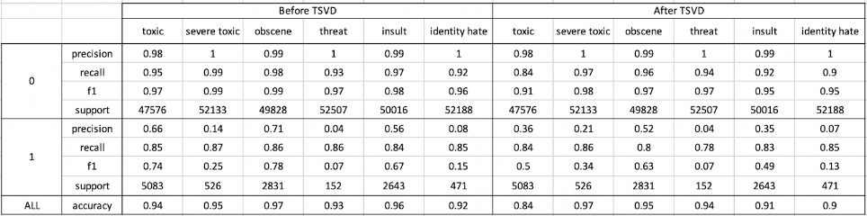

The Internet is a wonderful place for communication, creation, and collaboration. Platforms such as Reddit, YouTube, and Twitch can bring out the
best in online communities, serving as safe spaces to share ideas and support one another. However, internet communities can also bring out
negativity in its community members and serve as grounds for online fights and toxic comments.
In many of these cases, people leave nasty comments to others hidden behind their anonymity, making them difficult to moderate.
The goal of our project is to take out some of the toxicity through early detection, which can hopefully lead to deterrence. If we are able to classify comments quickly as being toxic and/or extremely negative, we could deter them and avoid escalating possible conflict, while allowing for safer online interactions for all individuals.
Data Exploration and Pre-Processing
Describing the Data
The data we will be using is a dataset featured on Kaggle for the Jigsaw/Conversation AI Toxic Comment Classification Challenge [1].
The data instances are a mix of labeled and unlabeled comments from Wikipedia’s talk page edits; data instances are containted
within the "comment_text" column, and possible labels given to us by the dataset are as follows:
"toxic", "severe_toxic", "obscene", "threat", "insult", and "identity_hate". As such, this is a multi-label classification problem, with binary values assigned to the columns;
a 1 under a column signifies that the label applies to the comment, and a 0 signifies that the label does not apply. For example, a certain comment may have 1's for column values
under "toxic" and "obscene", and 0's under all other columns, signifying that the comment is both toxic and obscene.
While manually observing the train.csv file, we saw that a large amount of column values were 0. This motivated us to see just how many comments did not have observable labels, and we were surprised to learn that approximately 89.83% of the comments were not assigned a category.
Of the comments that do have label values assigned, we observed the following distribution:
Manual Comparison via Wordclouds
The first set of pre-processing actions we performed were transforming all comments to lowercase, removing all special characters, and removing all stopwords in order to reduce
noise in the data and increase priority given to keywords.
In order to better prepare us for our classification task at hand, we decided to visualize the keywords in comments in each category through wordclouds
with the hope that there may be some distinguishing keywords between the different categories. However, the wordclouds show why classification might be difficult;
the majority of the keywords in each of the categories occurs in almost every other category, which makes it harder to distinguish comments between categories. The following is a
comparison of the wordclouds for each category of toxic comment
(please be warned, the language contained in the wordclouds may be considered offensive):
In order to prepare the data for the learning models we planned to use, we used different instances of TF-IDF or CountVectorizor in order to vectorize the comment text and make them easier to run through classification models, depending on the learning type (eg. unsupervised or supervised) and the specific model.
These techniques will be discussed more in-depth in the following sections as we discuss the unsupervised and supervised learning models we explored.
Train/Test Split
Lastly, it should be noted that for our supervised models, we arbitrarily chose to have a train/test split of 67% and 33%, respectively.
Unsupervised Learning Methods
The unsupervised learning methods we pursued are as follows:
Dimensionality Reduction
Truncated SVD
Delayed Sparce
SelectKBest
Clustering
K-Means
Gaussian Mixture Models
DBSCAN
K-Means with Dimensionality Reduction
Our dataset is very large, and as with many bodies of data scraped from the internet, it is heavily unstructured.
We experienced almost 160 thousand lines of text data that varies from a few words to hundreds, with well over 190,000 features
depending on the pre-processing method used.
We explored mainly two ways of vectorizing our text data: Count Vectorizer, which makes each word a feature and
the value the number of times this word appears in the text, and the TFIDF Vectorizer, which reflected the relative
importance of a word to a document in a given corpus. This is calculated by taking the product of term frequency,
the raw count of a term in a document, and inverse document frequency, the log inverse fraction of documents across
the corpus that contain a given term. Especially after vectorizing, data was unreasonably large, with almost 190
thousand features per datapoint, making around 30 billion entries in a matrix. As an experiment, we ran K-Means on
the vectorized data, which took around 2 hours to execute. To improve that, we experimented with two forms of dimensionality
reduction: Truncated SVD and Delayed Sparse PCA [5].
We could not use the original PCA algorithm learned in lectures due to its inefficiency with sparse matrices.
Both algorithms yielded similar results, which isn’t all surprising since they are both based on Singular
Value Decomposition, retaining 87.5% of variance with 400 components using Count Vectorizer, and reducing
the time it took the run K Means to around 5 minutes. For TFIDF, neither dimensionality reduction algorithm
proved efficient, with around 27% retained variance at 500 principal components. We decided to save the
results of Truncated SVD with 400 components and Count Vectorizer to use as a faster way to experiment with
different algorithms. We decided on this number and vectorizer by analyzing the plots below (both using TSVD):
Although K-Means proved to be a good way to test the differences between our original
and dimensionally reduced sets, the algorithm itself proved to be quite unsuccessful at
clustering our data, yielding very high inertias, which reduced linearly as the number of
clusters increased, making it impossible to use the elbow method, as depicted below:
Gaussian Mixture Models with Dimensionality Reduction
Following K-Means, a GMM was computed for the data using a GMM with 2 components,
since we were trying to do just a binary classification (distinguishing toxic and non toxic).
Overall, it did not seem to work well with the dataset we chose due to the following reasons:
The text, when vectorized with Count or TFIDF, was a sparse matrix, and GMMs do not handle sparse data.
GMMs also seem to much prefer datasets with a lower number of features (<100), but this one had about 190,000.
Converting such a large sparse dataset (about 130,000 by 190,000) to a dense format caused timeout errors, so dimensionality reduction was needed (see PCA/TSVD).
To try to fix some of the issues above, PCA was attempted but it did not seem to have much of an effect on the accuracy.
Then, Truncated SVD (TSVD) was applied to the dataset, which was slightly better. However it only got 90% accuracy
by assigning everything to the non toxic class. Another method was tried, called SelectKBest, which just orders the
features according to a metric (we used the chi squared metric).Some results (all with TF-IDF vectorizer):
Notice that the TSVD row had a precision score of nan: this was because this model classified everything as
non-toxic, so there was no second class for that metric to use which it needs. Overall, it seems that the
Select KBest is the best option here, but it does need more features to be super helpful.
The AIC (Akaike information criterion) is a way of measuring prediction errors/quality of a model on a given
dataset by estimating the amount of information lost from the model (therefore, minimizing the AIC is ideal) [6].
Calculating the AIC value for GMMs with 2-10 components yielded the graphs above, using normal and TSVD data.
According to AIC methods, the ideal number of clusters is about 8 (when minimizing the metric) but this clearly
does not work for binary classification. However, it could perhaps be thought of as more of an arbitrary
clustering algorithm like DBSCAN that would help divide up each class into smaller portions most like each
other. Also, note that the values of the SelectKBest graph are much lower overall than those on the TSVD
graph: this may indicate that, at least in this case, the SelectKBest data should be used:
Overall the TSVD appears to perform slightly better with the same number of features. However, this is probably
because it is classifying everything as non toxic, which is about 90% of the dataset. Also, the f1 scores for
the SelectKBest options are much higher but this may just be because TSVD's precision score doesn't exist as it
classifies everything as class 0.
DBSCAN
We attempted to tune the hyperparameters of a DBSCAN model to produce a reasonable amount of clusters (~20)
that would hopefully give us more insight into how differentiable the dataset is.
We knew that we wouldn’t be able to feasibly get 2 distinct classes for binary classification,
but we hoped to be able to distinguish certain groups of data points enough that they might be similar
enough to assign each a group, and hopefully each group would strongly correspond to either toxic or non-toxic.
The first thing noticed when working with this algorithm was the sensitivity of the parameters: by varying them
in increments of 0.1 for epsilon and 1 for min_samples, the number of clusters
could vary from around 5 to above 30. For this dataset, there seems to be an average of about
3-5% noise points with certain parameters, which is not too bad. However, one cluster seems to get the vast
majority of data points--using 100,000 points 96% were in the 'primary' cluster, probably signifying that the
algorithm cannot tell apart the vast majority of the comments. We also used both data derived from the SelectKBest
and TSVD methods here, since the normal amount of dimensions (190,000) was too many: overall they seemed to
give approximately the same results, but the TSVD took much longer to run. We believe this is because the
original dataset (data from the SelectKBest) was sparse which DBSCAN takes, so there was not as much data
to process, but the TSVD data was not sparse.
Our comparison for these methods is shown below:
We plotted the comparison for epsilon values to find the ideal epsilon using the density clustering technique discussed by
Dr. Mahdi Roozbahani [7], and observed that
it is probably around 200-250 using the normal dataset. However, when tried with an epsilon of
200 the kernel dies, so testing was inconclusive. Below is an exploration of these values:
To follow up, we explored a “parallel coordinates” plot as a way of plotting data that we thought may have helped with analyzing the results:
every feature of an attribute that was not 0 or noise was plotted. The x-axis is the feature number (there were 67
features used) and the y-axis is the value. The different colors correspond to the clusters. Eventually we also removed
all points in the first cluster, since there were so many and they were overwhelming the graph. The other graph just
plots the first 2 features against each other.
Supervised Learning Methods
The supervised learning methods we pursued are as follows:
Multinomial Naive-Bayes
Linear SVC
Logistic Regression
Hierarchical Modeling
Data Preparation
As previously mentioned, our supervised learning models used the many of the same steps for pre-processing the data, and explored different variations
of pre-processing to see if they helped our learning metrics:
Conversion to lowercase, removal of special characters and stopwords
TF-IDF, Reduced TF-IDF to vectorize text
Bag of Words, Reduced Bag of Words
We also proceeded with a train/test split of 67% and 33% respectively (67% of the original data was used for training, 33% was used for testing).
Multinomial Naive-Bayes
A Naive-Bayes classifier is perhaps the simplest classification model, widely used in text classification.
The classifier is built on Bayes theorem, and rests on assigning probabilities of belong to each category for a
given text [8].
The Multinomial Naive-Bayes model is built on assigning conditional probabilities to individual words or
tokens belonging to each category, based on relative frequencies of terms belonging to each class.
We selected the Multinomial Naive-Bayes model as our first supervised model for a few reasons.
Firstly, Naive-Bayes classifiers are widely supported and are among the easiest to implement for
text classification tasks, and we wanted to use such a model for setting a simple classification baseline
[9]. Secondly, since we are aiming to
compare and contrast different learning models, we wanted to use an initial model with a relatively low
computational complexity and low runtime, which the Naive-Bayes gives us.
Since we are aiming to perform some of the same pre-processing steps with multiclass labeling,
we decided to set up training pipelines through sklearn’s Pipeline object, which allows for organization
of sequential operations within a combined model. Within the pipeline, we first perform TF-IDF, and then
wrap our Naive-Bayes and Linear SVC classifiers within a One-vs-Rest Classifier from sklearn and then
train those models individually. Below is a snippet from the pipeline of the Multinomial Naive-Bayes
model we trained:
With regards to the classification results we received from our Multinomial Naive-Bayes model, we
were able to get decent precision, recall, and f1 scores for some of the labels. It should be noted however, that the large number of
unclassified data (with default values of 0) ended up heavily skewing the predictions of this model. Prediction scores of 0
were higher than prediction scores of 1 for all of the categories, which basically means that the classifier is finding it easier simply
to assing 0's as a label for every data instance for each category, and then assume a high accuracy. This is especially true for
"severe_toxic", "threat", and "identity_hate", resulting in the model simply classifying all data instances uniformly
to achieve a near perfect accuracy:
Linear SVC
With the hopes of seeing better classification results, we also ran our task through a
Support Vector Machine. As we know, Support Vector Machines (SVMs) offer binary classification
by finding the hyperplane that best divides the data based on certain features, and are well
known for their uses in text classification and image recognition problems.
Since we are dealing with a multiclass task, we again ran the SVM through the sklearn SVC,
in combination with a One-vs-Rest Classifier in order to get multiclass outputs.
However, one hyperparameter we needed to tweak was the class weight.
As previously mentioned, a large majority of our data (~89%) had no labels whatsoever,
which essentially meant that the default labels were set to 0. In a binary label
value where 89% of the data is labeled as a 0, the training and test outputs will
no doubt be heavily skewed, and a near-100% test accuracy may be achieved by erroneously
labeling all instances as 0’s. To avoid this scenario, we needed to assign balanced class
weights to the SVM model, allowing for skew correction if needed. With these tweaks,
we were able to achieve the following metrics:
It should still be noted that the skew of the original dataset's labels towards 0 and away from 1 resulted in better classification for assigning 0's
for all categories, even with a balanced class weight hyperparameter.
Logistic Regression with TF-IDF Vectorization
Logistic regression is applied to describe data and to explain the relationship between one dependent binary variable and one or more independent variables. Since the dataset has six categories, we conducted OneVsRestClassifier on each category, in order to test the ability to identify the comments of a certain label vs. all the rest comments. We used TF-IDF and stopword = ‘English’ to vectorize our dataset, limited to 400 iterations, and applied balanced weight on each class. The performance on the test set of specific categories is shown as “Before TSVD” in the table below.
The accuracies indicate that the models are trained well as they are higher than the random, which predicts every single item as 0 will still have 0.9 accuracy. In all categories, the recall score is steadily high while the precision is much lower. In our toxic comment classification task, since recall represents what percentage of the actual comment of a category that are correctly recognized, recall is more essential for evaluating how well the model is performed.
In general, as the logistic regression model reaches a relatively higher accuracy and recall, further exploration will be performed based on this method.
Logistic Regression with TF-IDF Vectorization and Truncated SVD
As mentioned earlier, truncated Singular Value Decomposition (TSVD) is a matrix factorization technique which is used to find the principal components of a matrix. To test our model with dimension reduction, we adopt the TSVD dataset (with 400 features) and train the logistic regression model.
Similar to the previous logistic regression model, we split the TSVD dataset into training data and test set (67% and 33%) and trained the logistic regression model with the same parameters. Comparing to the previous result on the test set without TSVD (shown in table), the overall accuracies and scores of predicting each category are mostly the same after dimensionality reduction. Except that there is a huge decrease in the accuracy of identifying the “toxic” category comment (94% before TSVD and 84% after TSVD).
The score of predicting 0--not belongs to a certain category--appears mostly the same as the previous ones. However, the precision and f1 of predicting 1--is identified as a certain label--are somewhat lower than without TSVD. This misclassification of 1’s may be the reason that causes a drop in accuracy. For example, in the toxic category, there is a significantly lowered precision and f1 score in identifying “is labeled as toxic”, which means more comments from other categories are identified as toxic (higher false positive) after dimension reduction. Though running on the reduced dataset may save runtime, we choose to stop exploring with the TSVD dataset since it yields much lower accuracy.
Below is a comparison of all of the Logistic Regression methods we performed:

Hierarchical Classification
Due to the nested nature of the classification problem and the imbalanced number of samples among the classes we explored the possibility of using a hierarchical model. That is, a primary classifier to determine whether or not a given post was toxic or non-toxic. Anything that was classified as toxic would then be inputted to a secondary classifier which would differentiate between the more fine-grained categories.
Layer 1, the primary classifier, uses Logistic Regression with an inverse regularization strength of 5. This is a binary classification, outputting either 0 (not toxic) or 1 (toxic). Anything classified as toxic gets sent to layer 2, the secondary classifier. This also uses logistic regression but has a higher inverse regularization strength of 10. Both layers balance the class weights, due to how lopsided our dataset is. Both of these layers are trained to convergence. Layer 1 reached a training accuracy of 96.57% and Layer 2 reached a training accuracy of 82.37%. Both are substantially higher than random and indicate that the model is properly learning. We would like to see Layer 2 get a bit higher, to ensure that it is truly learning the data, but we don’t want to overfit and so the current score is good enough for our purposes.
In testing, Layer 1 reports a score of 93.42% and layer 2 reports a score of 52.78%. Although Layer 2’s test accuracy is low, it is still substantially above random, since there are 5 categories that layer 2 differentiates between.
Below is a comparison of all of the Logistic Regression methods we performed:
The hierarchical model performs better in overall accuracy and gains in precision and f1 score, but loses some points in recall. Since the datasets are so imbalanced, we care mostly about precision. This means that we’re willing to take losses in some of the other metrics.
Conclusion
Overall, we were able to learn many lessons from the completion of this project. We learned to pre-process data in different ways,
select features and reduce dimensions through a broad range of methods, and had the opportunity to perform and evaluate a multitude of unsupervised
and supervised learning methods.
Perhaps the biggest lesson we learned is how datasets and models behave in the real world. In the both academia and industry, the datasets
that scientists deal with are exorbitantly large in both instance and feature size, making data preperation, feature selection, model selection, and model optimization
continually occurring challenges. We were able to see this firsthand through the large, heavily unlabeled dataset we worked with, as we tried our hands
at numerous learning models with the hopes of achieving high learning metrics and test accuracies. Dimensionality reduction and feature selection was
especially crucial for our unsupervised learning models, as the large number of features lead to many runtime and memory issues initially; K-Means, one of the simpler
unsupervised algorithms took an average of 2 hours to complete. With our supervised learning models, the issue became
the lack of labels (89% of the data defaulted to a boolean value of 0 for every category), leading many of our models to simply assign uniform labels
erroneously to achieve high test accuracies. Even with our most complex supervised model, this bias in the dataset was still evident.
Regardless of the challenges we encountered, we learned to adapt our our models using combinations of methods we learned in the CS7641 course to circumvent the barriers we faced, whether they were runtime/memory related, or classification metric related.
With regards to future work, we think it would be a good direction to procede a neural-network or some ensemble learner using the pre-processing and learning methods we've discussed. All in all, we all very much enjoyed this project, and are extremely thankful for this opportunity to share our work!
[2] B. van Aken, J. Risch, R. Krestel, and A. Löser, “Challenges for Toxic Comment Classification: An In-Depth Error Analysis,” ACL Web, 2018. [Online]. Available: https://www.aclweb.org/anthology/W18-5105.pdf. [Accessed: 09-Feb-2020].
[3] L. Huang, M. Yu, “Building Unbiased Comment Toxicity Classification Model with Natural Language Processing” Department of Statistics Stanford University. [Online]. Available: http://cs229.stanford.edu/proj2019spr/report/79.pdf. [Accessed: 17-Feb-2020].
[4] J.Devlin, M.W. Chang, K. Lee, Toutanova, and Kristina, “BERT: Pre-training of Deep Bidirectional Transformers for Language Understanding,” arXiv.org, 24-May-2019. [Online]. Available: https://arxiv.org/abs/1810.04805. [Accessed: 17-Feb-2020].
[6] S. Date, "The Akaike Information Criterion", 9-Nov-2019. [Online]. Available: https://towardsdatascience.com/the-akaike-information-criterion-c20c8fd832f2. [Accessed: 17-Feb-2020]
[8] R. Raj, "Naive Bayes for Beginners...!", 5-Nov-2019. [Online]. Available: https://medium.com/@ronithron85/naive-bayes-for-beginners-f69fac981f36. [Accessed: 19-Feb-2020]
[9] G. Chauhan, "All about Naive Bayes", 8-Oct-2018. [Online]. Available: https://towardsdatascience.com/all-about-naive-bayes-8e13cef044cf. [Accessed: 19-Feb-2020]


{kind=link}
{kind=link}
{kind=link}
{kind=link}
{kind=link}
{kind=link}
{kind=link}
{kind=link}
{kind=link}
{kind=link}
{kind=link}
{kind=link}
{kind=link}